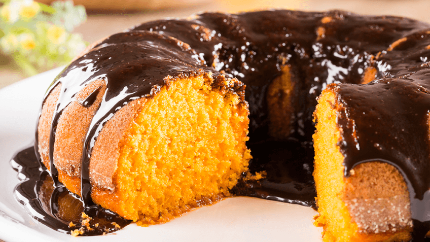

Bolo de Cenoura

Ingredientes:
- 3 cenouras médias raladas.
- 3 ovos.
- 1 xícara de óleo.
- 2 xícaras de açúcar.
- 2 xícaras de farinha de trigo.
- 1 colher de sopa de fermento em pó.
- 1 pitada de sal.
Modo de Preparo:
- Bata no liquidificador as cenouras, os ovos e o óleo.
- Em uma tigela, misture o açúcar, a farinha de trigo, o fermento em pó e o sal.
- Adicione a mistura líquida à mistura seca e misture bem.
- Despeje a massa em uma forma untada e enfarinhada.
- Leve ao forno preaquecido a 180°C por cerca de 40 minutos ou até que um pailito saia limpo ao ser espetado no centro.
Assista ao vídeo da receita:
Dicas:
- Para uma cobertura cremosa, misture cim cream cheese com açúcar de confeiteiro e espalhe sobre o bolo.
- Se preferir, adicione nozes ou passas à massa.